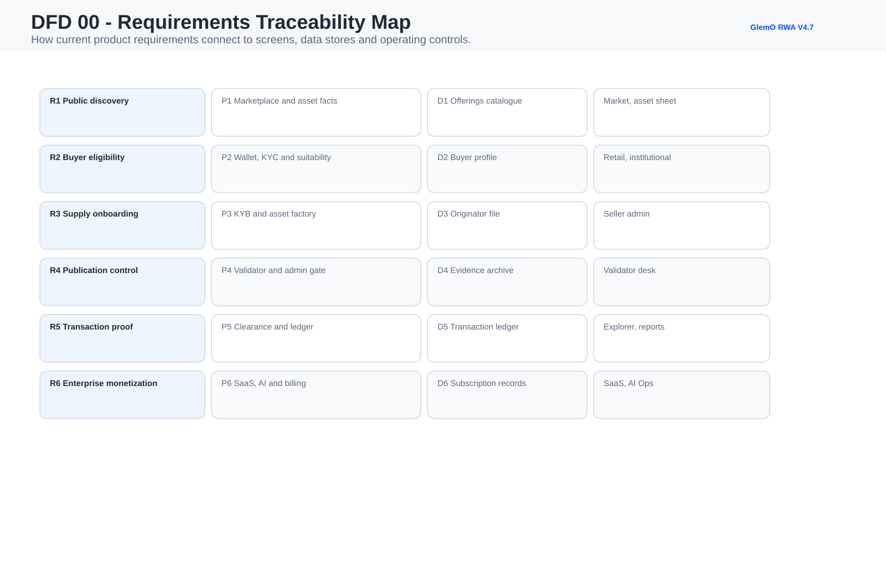
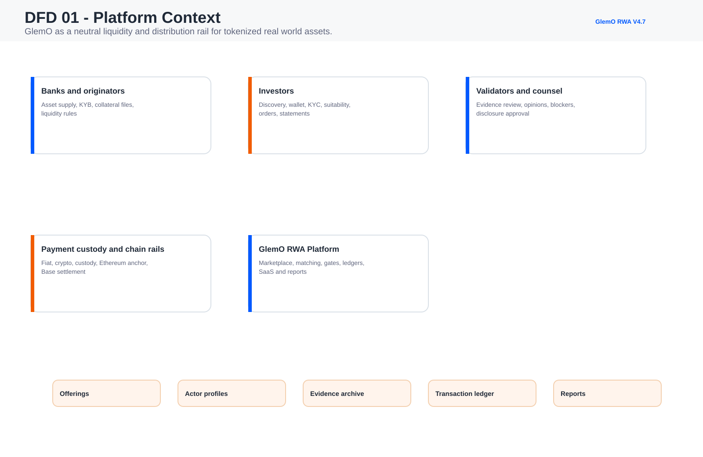
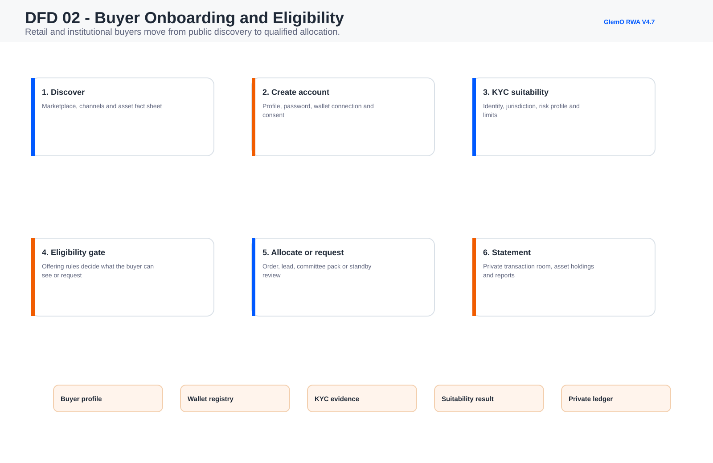
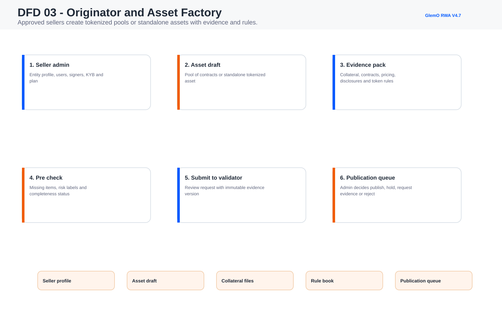
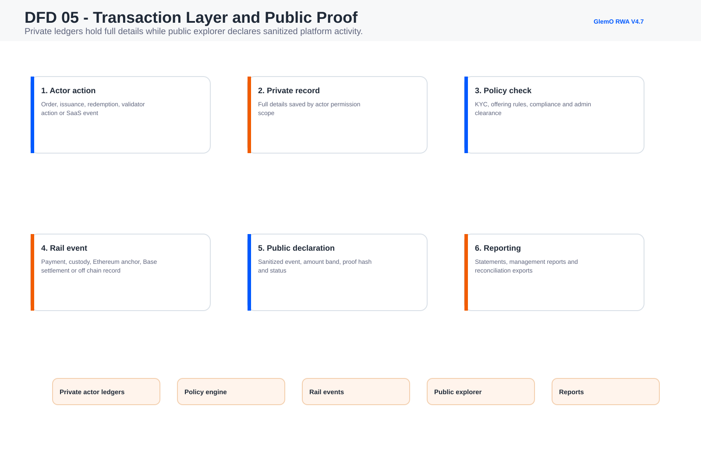
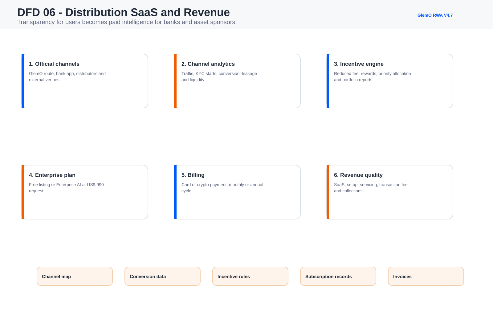
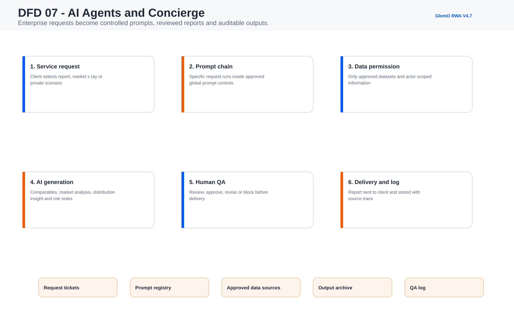
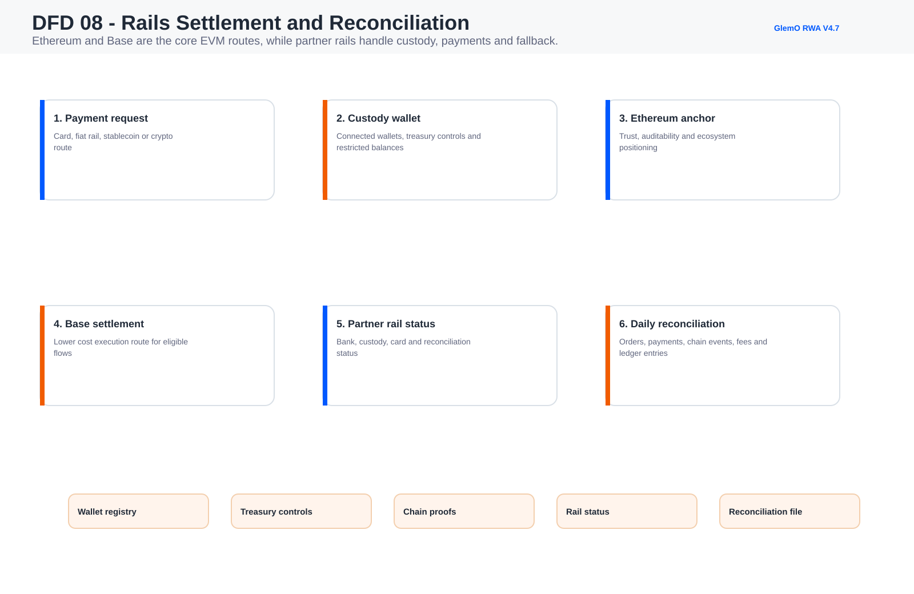
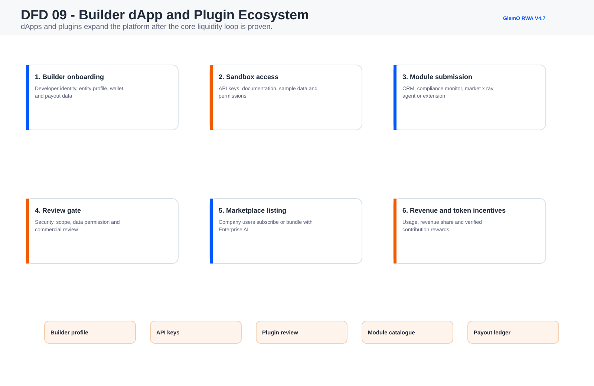

DFD 00 - Requirements Traceability Map
How current product requirements connect to screens, data stores and operating controls.

Current data flows, product requirements and implementation boundaries.
This page declares the DFD set for the current platform status and makes the requirements traceable to the platform screens used in the investor data room.
| ID | Requirement | Scope | Platform Screens |
|---|---|---|---|
| R1 | Public asset discovery Marketplace, official distribution channels, asset fact sheet and clear risk labels must be visible before account creation. | MVP1 core | market, assetFactSheet, distributionSaas |
| R2 | Buyer account and eligibility Retail and institutional buyers need private profile, wallets, KYC/KYB, suitability, jurisdiction and transaction history. | MVP1 core | retailPortal, investorGate, institutionalPortal |
| R3 | Seller onboarding Banks, originators and approved sellers need entity profile, KYB, signers, plan, asset factory and distribution controls. | MVP1 core | sellerOrgAdmin, bankOps, assetFactory |
| R4 | Validator gate Assets cannot go live without evidence review, validator status and admin publication control. | MVP1 core | validatorDesk, documentReview, complianceCases |
| R5 | Admin transaction clearance Sensitive transactions can enter standby; seller pre-check helps prepare evidence, but central admin controls platform release in MVP1. | MVP1 core | transactionClearance, adminDashboard |
| R6 | Transaction declaration layer The platform needs private actor ledgers and a public sanitized explorer for activity, proof hashes and chain route status. | MVP1 core | transactionLayer, ledger, reports |
| R7 | Revenue operations SaaS, setup, servicing, transaction fees, invoices, card/crypto payment and collection status must be visible to prove business model. | MVP1 core | billingRevenue, sellerPlans |
| R8 | Distribution SaaS Enterprise clients need channel map, conversion analytics, external transaction leakage, incentives and partner performance. | MVP1 beta | distributionSaas, distributionPartner |
| R9 | AI concierge governance AI requests must capture prompt chain, allowed data scope, human QA, delivery log and customer request history. | MVP1 beta | aiOps, conciergeDesk |
| R10 | Rails and chain architecture Ethereum plus Base should be documented as the initial EVM-aligned architecture, with partner rails for custody, payment and reconciliation. | MVP1 beta | railPartner, riskEngine, ledger |
| R11 | Asset technical sheet Each tokenized asset needs responsible entities, tokenization history, collateral, documents, performance and liquidity behavior. | MVP1 core | assetFactSheet |
| R12 | Builder ecosystem dApps, plugins and extensions should exist as a future expansion layer after marketplace and distribution rail proof. | Phase two | ecosystemBuilder |
How current product requirements connect to screens, data stores and operating controls.

GlemO as a neutral liquidity and distribution rail for tokenized real world assets.

Retail and institutional buyers move from public discovery to qualified allocation.

Approved sellers create tokenized pools or standalone assets with evidence and rules.

Publication and sensitive transactions remain controlled in MVP1.
Private ledgers hold full details while public explorer declares sanitized platform activity.

Transparency for users becomes paid intelligence for banks and asset sponsors.

Enterprise requests become controlled prompts, reviewed reports and auditable outputs.

Ethereum and Base are the core EVM routes, while partner rails handle custody, payments and fallback.

dApps and plugins expand the platform after the core liquidity loop is proven.

{kind=link}
{kind=link}
{kind=link}
{kind=link}
{kind=link}
{kind=link}
{kind=link}
{kind=link}
{kind=link}
{kind=link}
{kind=link}
{kind=link}
{kind=link}
{kind=link}
{kind=link}
{kind=link}
{kind=link}
{kind=link}
{kind=link}
{kind=link}